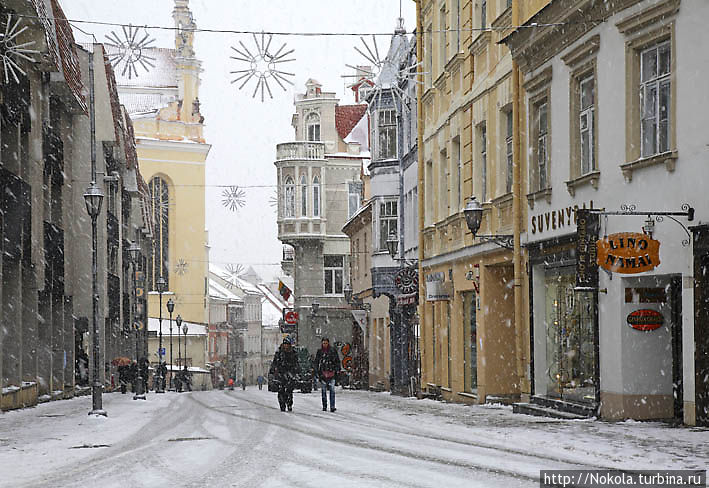
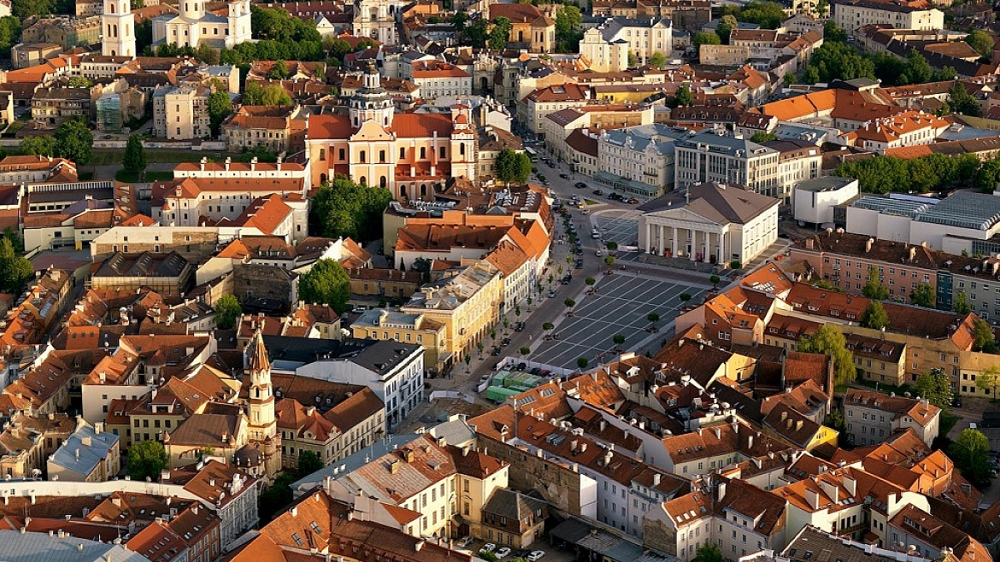

История

1236 год Битва при Сауле
1253 год Коронация Миндовга
1385 год Кревская уния (с Польшей)
1569 год Люблинская уния (с Польшей)
1795 год Ликвидация Речи Посполитой
16 февраля 1918 Независимость
1940 год Литовская ССР
11 марта 1990 Независимость от СССР
Вильнюс
В письменных источниках город впервые упоминается в первой четверти XIV века, когда он стал резиденцией великих князей литовских и столицей Великого княжества Литовского: в письме на латинском языке, датированном 25 января 1323 года Гедимин назвал Вильну своим стольным городом.

В 1503—1522 годах город был окружён городской стеной с девятью воротами и тремя башнями. Вершины развития Вильна достигла в правление короля польского и великого князя литовского Сигизмунда Старого. В дальнейшем город постоянно рос и развивался
1579 году королём Польши Стефаном Баторием в городе была основана Академия Общества Иисуса (иезуитов), которая позднее стала Виленским университетом. Таким образом, Вильна стала первым университетским городом Великого княжества Литовского и его крупным научным и культурным центром.

По данным всеобщей переписи населения 2001 года, из 542 287 жителей 57,8% — литовцы, 18,7% — поляки, 13,9% — русские, 3,9% — белорусы, 1,3% — украинцы, 0,5% — евреи и 3,9% представителей других национальностей.